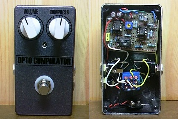
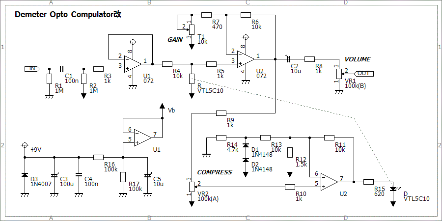
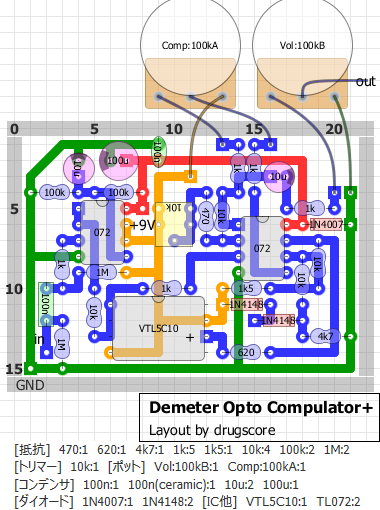
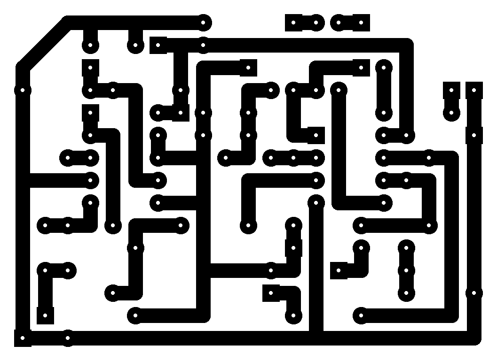

DEMETER Opto Compulator改
2012年11月03日 カテゴリー：自作エフェクター（アナログ）

今回はフォトカプラを使ったオプティカル（光学式）コンプレッサー、DEMETER Opto Compulatorです。いろんなコンプレッサーを試してみたいということで作ってみました。
▽回路図

▽レイアウト

▽PCB（横55.9mm縦40.6mm）

「改」といっても大した変更ではありません。コンデンサの値を大きくしたり、抵抗の値を手持ちに合わせたりしています。元の回路図に出てくる619Ωとかいう中途半端な値の抵抗にどこまで意味があるのかわからないのですが、一応フォトカプラにつながる抵抗は620Ωにしておきました。680Ωとか、1kΩと2.2kΩの並列（=687.5Ω）とかでも大丈夫だと思います。Volumeは100kB、Compressに100kAのポットを使いましたが特に問題ありません。
回路としては周波数特性を変化させずにゲインを変えているだけなので、やはり自然なかかり方だと思います。フォトカプラVTL5C10のおかげなのか反応時間が速いようです。OTA（LM3080等）を使ったコンプレッサーとはそういった部分で音に違いが出てくるのかもしれません（私にはいまいちわかりませんが…）。フォトカプラはGarrettaudioで通販可能ですが、値段が高いのが難です。自作のフォトカプラでもよかったのですが、定数の調整が面倒になりそうなのでやめておきました。
ケースは以前作ったコンプレッサーのものを使っています。そんなに不満はなかったのですが、今回作ったコンプレッサーの方が回路が簡単で操作性がよいかなと思います。
（2016年11月9日回路図・部品リスト・レイアウト・PCB追加）